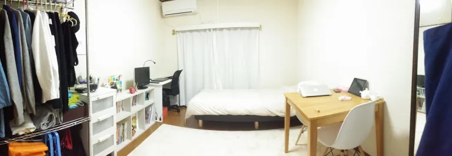

MÌNH ĐÃ THAY ĐỔI NHƯ THẾ NÀO KỂ TỪ KHI SỐNG TỐI GIẢN?

Tháng 7 năm 2018, đó là thời điểm mình bắt đầu tập tành viết blog. Bài viết đầu tiên của mình về chủ đề tối giản có tiêu đề là “ Vứt bỏ và dọn dẹp đã giúp mình thay đổi cuộc sống như thế nào“. Ban đầu, mình đặt tiêu đề là “thay đổi cuộc đời“, nhưng bố đã bảo mình sửa lại thành “cuộc sống” (hồi đó bố mình “chăm” sửa lỗi diễn đạt hoặc dùng từ cho mình lắm). Mình cũng nhận thấy là sử dụng từ “cuộc sống” nó hợp lý hơn, vì tính đến thời điểm mình viết bài đó, bản thân mình mới đang trong quá trình “nhập môn tối giản học”, và sự ảnh hưởng tích cực mà sống tối giản mang lại nó vẫn chủ yếu nằm ở mặt vật chất.
Nhưng sau 2 năm, mình tin rằng lối sống tối giản đã thay đổi cuộc đời mình. 2 năm dường như là quá ngắn để có thể dùng từ cuộc đời. Nhưng trong 2 năm này, có rất nhiều thứ thay đổi trong con người mình, đặc biệt là trong tư duy và suy nghĩ về cuộc sống xung quanh, mà nó đã dẫn lối cho mình đi theo một con đường hoàn toàn khác. Nói tóm gọn là mình đã “đổi đời” (viết tắt của thay đổi cuộc đời).
Vì vậy, ở bài viết này, mình muốn viết một cách ngắn gọn và súc tích nhất để mọi người có thể hình dung được trình tự thay đổi diễn ra trong con người mình kể từ khi sống tối giản. Và để giúp mạch viết của bài viết này trở nên trôi chảy hơn, mình muốn trích những câu viết mình tâm đắc nhất trong cuốn “một cuốn sách về CHỦ NGHĨA TỐI GIẢN” của chị Chi Nguyễn (The Present Writer), bởi mình nhận thấy có sự tương đồng đến mức gần như là y hệt trong hành trình trải nghiệm lối sống tối giản của mình và chị Chi. Đó là một sự thay đổi bắt đầu từ việc tối giản căn phòng, nhưng dần dần nó giúp bản thân mình hình thành một tư duy tối giản được áp dụng trong mặt tinh thần và phi vật chất, qua đó giúp mình xây dựng được tư duy tích cực và tư duy phát triển.
Tối giản hoá đồ đạc
Tối giản hoá đồ đạc thường là bước đầu tiên và dễ dàng nhất… Việc bắt tay vào thay đổi những giá trị vật chất hữu hình (đồ đạc trước sẽ giúp người mới bắt đầu có cái nhìn cụ thể hơn về Chủ nghĩa tối giản. (trang 48)
Để bước chân vào con đường sống tối giản, hầu hết ai cũng sẽ bắt đầu từ việc dọn dẹp đồ đạc. Sau khi đọc 2 cuốn sách của Sasaki Fumio và Marie Kondo, mình đã bắt tay ngay vào công việc dọn dẹp căn phòng của bản thân (hồi đó mình còn đang du học Nhật). Cuộc “cách mạng dọn dẹp” đó ngay lập tức đã giúp mình cảm nhận được lợi ích của việc vứt bỏ đồ đạc, và mình chính thức theo đuổi lối sống tối giản từ những ngày đó.

Tối giản hoá sự lựa chọn
Khi bắt đầu cuộc hành trình tối giản, bạn sẽ nhận ra rằng cuộc sống là một chuỗi những chọn lựa…Tối giản hoá sự lựa chọn, vì thế, là một trong những điểm cốt lõi của lối sống tối giản. (trang 78)
Bạn bắt đầu với việc lựa chọn xem đâu là món đồ quan trọng và đâu là thứ có thể vứt bỏ được. Rồi bạn sẽ nhận thấy giảm thiểu sự lựa chọn sẽ giúp bạn bớt phải suy nghĩ hơn, từ đó có thể đưa ra quyết định một cách nhanh hơn. Điển hình là việc chọn lựa quần áo. Thật ra ngay từ trước khi sống tối giản, gu ăn mặc của mình phần nào cũng khá đơn giản, không hoa hoè hoa sói, chỉ là mình cũng từng thích mặc mấy món đồ màu nổi nổi như màu hồng, màu đỏ,… Còn từ khi bắt đầu sống tối giản, mình giới hạn lại những món đồ mình mặc, và thường chỉ mặc 3 màu là trắng, ghi và đen.


Thiết lập thói quen
Nhưng lựa chọn không phải chỉ nằm ở yếu tố vật chất. Thói quen hàng ngày là một ví dụ… Điều tốt nhất chúng ta có thể làm để tối giản hoá lựa chọn là thiết lập một chu trình ổn định. (trang 82-83)
Những thay đổi tích cực đầu tiên mà lối sống tối giản đem lại thường sẽ thôi thúc bạn tiến tới một cuộc sống lành mạnh hơn. Nếu giống mình, bạn sẽ nghĩ như thế này: “nhân đây thay đổi luôn lối sống nhỉ. Dậy sớm thôi, tập thể dục thôi”.
Mình bắt đầu tập dậy sớm, đi ngủ sớm và cố gắng biến nó thành một thói quen tốt. Nhưng cái mà mình bị vướng mắc trong khâu đầu tiên, đó là, dậy sớm xong thì làm gì? Nghĩ xem nên làm việc gì vào mỗi buổi sáng sớm có thể sẽ lại chỉ khiến đầu óc mình trở nên mệt mỏi hơn, và đó là lúc mình nghĩ đến việc tạo một morning routine (thói quen buổi sáng).
Thói quen buổi sáng của mình trong những ngày đầu mới thiết lập bao gồm 3 việc: thiền, tập yoga và viết nhật ký. Nhờ đọc cuốn sách “Mini Habits” của Stephen Guise mà mình biết đến khái niệm thói quen nhỏ, và nhờ áp dụng thói quen nhỏ vào cuộc sống mà mình dần dần xây dựng được một chuỗi những hành động nên làm vào buổi sáng mà không cần phải suy nghĩ nhiều. Hiện tại mình còn duy trì thói quen buổi tối rất ổn định với phương pháp Shutdown Ritual. Bạn có thể đọc kĩ tại bài viết này nhé.
Sống cho hiện tại
Khi bắt đầu tối giản hoá cuộc sống, dù ít hay nhiều, bạn sẽ phải đặt ra cho mình những câu hỏi về sự lựa chọn và ưu tiên – đâu là thứ cần thiết cho cuộc sống, đâu là thứ thừa thãi nên buông bỏ; và tự nhiên, tư duy của bạn sẽ thay đổi, đa chiều hơn và sâu sắc hơn. Quá trình ấy, một cách âm thầm, sẽ làm chậm guồng quay cuộc sống hàng ngày của bạn lại một vài nhịp. (Trang 101)
Những dòng viết của chị Chi diễn giải rất đúng quy trình thay đổi trong tư duy của chính bản thân mình. Đến một thời điểm, mình nhận thấy trong đầu mình luôn có sẵn một câu hỏi “liệu nó có thực sự quan trọng không?”. Câu hỏi này đã được mình sử dụng cho việc lựa chọn và loại bỏ những thứ mang tính vật chất, hữu hình như đồ đạc, quần áo nhưng dần dần mình cũng sử dụng câu hỏi này cho cả những điều liên quan đến mặt tinh thần.
Một trong những ví dụ điển hình, đó là chính là sự lựa chọn giữa quá khứ, hiện tại và tương lai. Liệu quá khứ và tương lai có quan trọng hơn cuộc sống hiện tại? Liệu mình cần ưu tiên nghĩ về khoản thời gian nào hơn? Đó là những suy nghĩ mà mình dần có được sau một thời gian sống tối giản.
Nghĩ lại thì nó cũng thật là kì diệu. Những ngày đầu khi mới bắt tay vào việc vứt bỏ đồ đạc, những gì mình nghĩ đến chỉ là một cuộc sống gọn gàng thoải mái, chứ thú thật là mình không hề nghĩ gì đến chuyện sống cho hiện tại. Nếu mà quay lại thời điểm trước khi sống tối giản mà có ai đó nói với mình “hãy sống cho hiện tại!”, mình sẽ cảm thấy những câu nói đó thật là trừu tượng và mĩ miều làm sao. Nhưng khi đã trải nghiệm lối sống tối giản thì mình mới cảm nhận được điều đó. Và giờ đến lượt mình là người luôn miệng nói “be present”.
Lối sống tối giản là sự khởi đầu
Điều tuyệt vời nhất của Chủ nghĩa tối giản không phải ở “đích đến” của nó (như chỉ còn vài bộ quần áo thiết yếu trong tủ hay có một vài người bạn thân thiết nhất), mà ở hành trình trải nghiệm lối sống này. (trang 116)
Sasaki Fumio cũng đã viết một câu tượng tự trong cuốn sách của anh ta: “lối sống tối giản không phải là mục đích, mà là một phương tiện giúp ta nhận rõ đâu mới là điều quan trọng thực sự trong cuộc sống”.
Có lẽ phải thực sự trải nghiệm cuộc sống của một minimalist thì bạn mới có thể nhận thấy được lối sống tối giản nó giống như là một sự khởi đầu hơn là kết thúc. Lối sống tối giản đối với mình nó giống như một nền tảng, một tiền đề giúp bản thân hướng tới một cuộc sống mới ý nghĩa hơn. Một cuộc sống gọn gàng, ít đồ đạc giúp bản thân không tốn quá nhiều năng lượng vào việc suy nghĩ xem nên lựa chọn cái nào,… Đó là những điều tích cực mà ai cũng có thể cảm nhận thấy. Nhưng không chỉ dừng lại ở đó, nhờ sống tối giản mà mình bắt đầu có ý thức về việc xây dựng thói quen, có một tư duy và cái nhìn sâu sắc hơn về cuộc sống xung quanh, để rồi đưa ra một hướng đi, một cách sống mới để có thể giúp bản thân trải nghiệm cuộc sống một cách có ý nghĩa nhất. Và trong hành trình trải nghiệm lối sống tối giản, mình tiếp tục được gặp gỡ với một người bạn tốt mang tên “tư duy tích cực”.
Tư duy tích cực
Nếu Chủ nghĩa tối giản là một (trong những) con đường đưa con người đến với sự giải phóng tư duy và thay đổi cuộc sống theo chiều hướng tốt hơn thì tư duy tích cực như một ngọn đèn sáng soi rọi con đường (trang 118)
Be positive! Đó là câu mình thường xuyên viết trong cuốn sổ nhật ký để tự động viên bản thân. Rồi đến một lúc mình nhận thấy như bản thân muốn được chia sẻ nguồn năng lực tích cực đó ra bên ngoài, và blog chính là phương thức để mình có thể gửi gắm nguồn năng lượng đó đến mọi người. Bây giờ thì mình còn quay cả vlog nữa. Nếu theo dõi blog lẫn vlog của mình, có lẽ bạn sẽ biết được mình trân trọng điều gì nhất. Đó chính là những niềm vui nhỏ bé diễn ra trong cuộc sống của mình. Hãy thử tưởng tượng ngày nào bạn cũng đều được “nạp” năng lượng tích cực từ những điều giản dị nhỏ bé đó. Nó sẽ giúp mỗi ngày của bạn trở nên có ý nghĩa hơn và giúp bạn có một cái nhìn lạc quan hơn về cuộc sống.
Nhắc đến việc làm vlog. Có lẽ nếu không có điều này thì chưa chắc mình đã làm được. Đó là “tư duy phát triển” (growth mindset). Trên hành trình trải nghiệm lối sống tối giản, mình gặp gỡ người bạn đầu tiên có tên là “tư duy tối giản hoá sự lựa chọn”, tiếp đến là bạn “tư duy tích cực”, và người bạn tiếp theo mà mình gặp là bạn “tư duy phát triển”.
Tư duy phát triển
"Từ góc nhìn về phát triển bản thân, tôi nhận thấy tư duy phát triển có quan hệ mật thiết tới chủ nghĩa tối giản. Vì chủ nghĩa tối giản xoay quanh ý tưởng về sự cầu tiến, tư duy tích cực, sẵn sàng thay đổi bản thân, liên tục tìm đến các giá trị cốt lõi, cở mở và cảm thông với những gì xảy ra đối với chính mình và những người xung quanh. Tất cả những điều này chỉ có thể làm được với một tư duy phát triển". (trang 174)
Tư duy phát triển (growth mindset) – tin rằng ta có thể học hỏi và cải thiện các khả năng và năng lực thông qua sự nỗ lực và vượt qua thất bại. Vậy ngược lại với tư duy phát triển là gì? Đó là tư duy cố định (fixed mindset) – tin rằng khả năng, phẩm chất và đặc điểm của một người là cố định và không thể phát triển hơn nữa theo thời gian (Theo Carol Dweck).
Rõ ràng, hành trình trải nghiệm lối sống tối giản chính là hành trình của sự thay đổi. Trong đó có những sự thay đổi mà dường như chính bản thân mình cũng không thể ngờ tới. Với tâm trí luôn hướng đến một cuộc sống có ý nghĩa hơn, mình cảm thấy bản thân phải học hỏi nhiều hơn, trải nghiệm nhiều hơn, để rồi từ đó mình nghĩ đến việc thử làm những điều mà trước giờ bản thân mình chưa bao giờ làm, hoặc bản thân cho rằng đó là điều không thể làm được, ví dụ như viết blog, làm vlog, tập đàn piano,… Mình từng ghét viết, từng cho rằng bản thân không chơi được piano, nhưng bằng một cách nào đó, mình lại có quyết tâm để làm những điều này. Và mình nghĩ, đó là nhờ sự thay đổi trong tư duy mà lối sống tối giản đem lại.
Mình đã thay đổi như thế nào?
Để tóm gọn lại toàn bộ nội dung bài viết trong một câu thì mình sẽ viết như sau:
Lối sống tối giản đã giúp mình có được một cuộc sống ngăn nắp gọn gàng ít đồ đạc, kể từ đó hình thành được một lối suy nghĩ biết ưu tiên và chọn lựa những thứ quan trọng. Nhưng không chỉ dừng lại ở đó, lối sống tối giản còn trở thành một nền tảng vững chắc để giúp mình xây dựng một cuộc sống có ý nghĩa hơn, một cuộc sống mà bản thân biết trân trọng những gì xảy ra trong thời điểm hiện tại. Và quan trọng nhất, lối sống tối giản giúp mình hình thành được tư duy tích cực và tư duy phát triển, để từ đó giúp mình luôn sẵn sàng học hỏi và thay đổi để bản thân có thể phát triển hơn và tìm thấy được những tiềm năng mà ngay cả bản thân cũng chưa khám phá tới.
Công thức 3T
Trải qua 2 năm, với những kinh nghiệm đã đúc kết được trong suốt hành trình sống tối giản, mình đã có được một công thức phát triển bản thân cho riêng mình, mà mình tin là có thể nó sẽ giúp bạn thay đổi cuộc sống, à không, thay đổi cuộc đời. Mình gọi đây là phương thức 3T: Tối giản hoá – Thói quen hoá – Tối ưu hoá.
Tối giản hoá sẽ là bước đầu tiên, và cũng là bước quan trọng nhất. Khi đã xây dựng cho bản thân một tư duy tối giản bao gồm việc ưu tiên và lựa chọn những thứ quan trọng, bạn sẽ xây dựng cho mình một hệ thống những thói quen tốt. Khi đã hình thành được những thói quen, bạn sẽ dư ra rất nhiều thời gian và năng lượng để làm những việc khác. Lúc đó, bạn sẽ tận dụng sức mạnh của các thói quen và công nghệ để tối ưu hoá năng suất học tập và làm việc của bản thân.
Mình tin đây sẽ là công thức giúp bản thân mình đạt được một mục tiêu:
To become a polyglot who inspires people with his language learning as well as mindfulness and minimalist lifestyle.
Stay focused, be present.
Kira


COMMENT
Tarobam 1 ngày trước
Ah the memories of watching Shelter for the first time, and now to re-live the feeling with Hiyumi singing it.
Justin Y. 1 ngày trước
Imagine traveling back decades and explaining to him that in the future, hundreds of thousands of people will be listening to his song on a supercomputer with a picture of a Japanese cartoon.
DigiNeko 2 ngày trước
Classic Masterpiece.